Physique Statistique
Du microscopique au macroscopique
José MORAN
Les "gros" domaines en physique ?
La physique quantique
Chat de Schrödinger, effet tunnel, intrication, atomes froids....

La physique des particules
Quarks, neutrinos, boson de Higgs...
La physique théorique
Théorie des cordes, gravité quantique...
Relativité et cosmologie
Big bang, trous noirs, ondes gravitationnelles...

Physique statistique
et matière condensée !
On connaît les "briques", qu'est-ce qui se passe quand on les met ensemble ?
Comprendre ce qui se passe quand il y a beaucoup (trop!) d'éléments qui intéragissent entre eux
Comment est-ce que tout a commencé ?
La thermodynamique : l'étude de la chaleur
L'air chaud s'expand !
$PV=nRT$
...et on peut s'en servir !
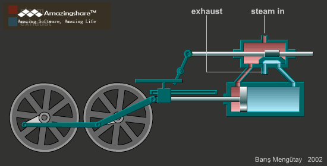Pourquoi ?
Un gaz : $10^{26}$ particules en intéraction.
$ma_i=\sum_{i\neq j}F_{j\rightarrow i}$
Il y a $10^{26}$ inconnues ! Impossible à résoudre. Mais...
La physique statistique : probabilités
En bleu : résultats de la simulation. Rouge : résultats théoriques
Quelles grandeurs ?
- La température : l'énergie des particules
- La pression : la force avec laquelle les particules "cognent" contre les parois
- L'entropie : le désordre
Comment comprendre qu'il y ait des gaz, des liquides...?
Piste :
Intéractions plus compliquées. En faisant varier un paramètre, le système change complètement !
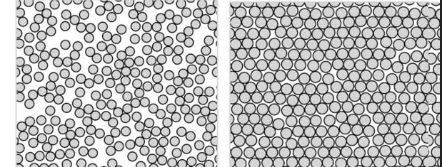Le magnétisme
Modèle d'Ising
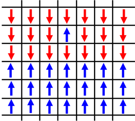Intéraction microscopique : alignement des boussoles
Les boussoles veulent s'aligner !
Haute température
Indifférent :Basse température
On veut à tout prix s'aligner !
Qu'est-ce que ça donne ?
Haute température
Il n'y a pas d'"ordre" apparent. Chacun fait ce qu'il veut...
Basse température
Un ordre émerge !
Combien de boussoles pointent vers le haut (ou bas) en moyenne ?
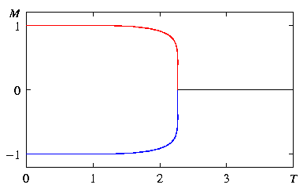Magnétisme !
Qu'est ce qui se passe si les boussoles ne veulent pas s'aligner ?
Question !
Qu'est-ce qui vous a fait avoir Snapchat/Facebook/un iPhone ?
Surprise !
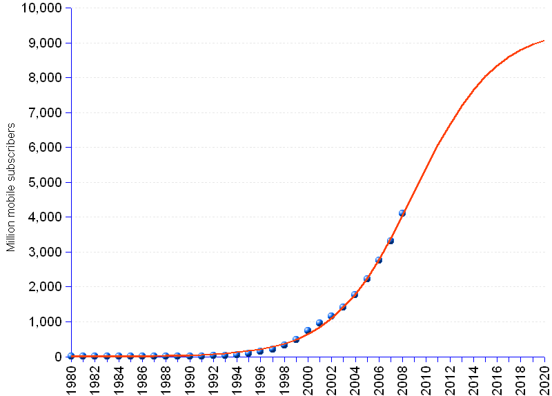Quel est le lien...?
- Qu'est ce qui vous fait acheter un portable ?
$\Rightarrow$ des règles microscopiques "simples" donnent un comportement pas du tout prévisible !
Autre exemple : le vol d'étourneaux
Baladez vous un après-midi d'été, à Rome...
Il n'y a pas d'oiseau leader !
et pourtant le vol est impressionant. Comment ça se fait ?
Bilan :
- Les systèmes avec beaucoup d'éléments : très compliqués
- On s'en sort avec des modèles probabilistes
- Les règles microscopiques donnent un comportement macroscopique !
Les flocons de neige
La SNCF
Internet et Facebook
La formation des flocons
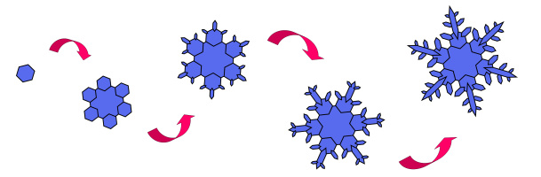Préliminaire : le crystal de sel
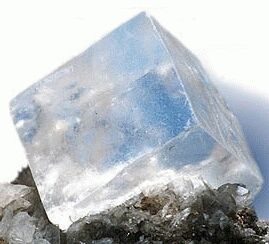Parfaitement carré
Pourquoi ? Structure microscopique !
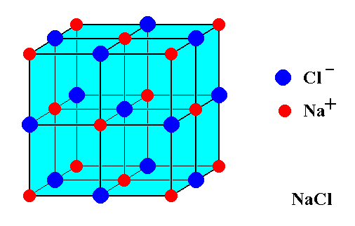La structure des atomes de sodium et chlore font qu'ils ont "envie"de se mettre comme ça.
Symétries entre molécules
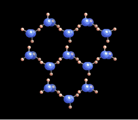Les molécules d'eau aiment bien se mettre en hexagone !
Cette symétrie se retrouve dans la croissance d'un crystal
...mais le hasard donne beaucoup de richesse
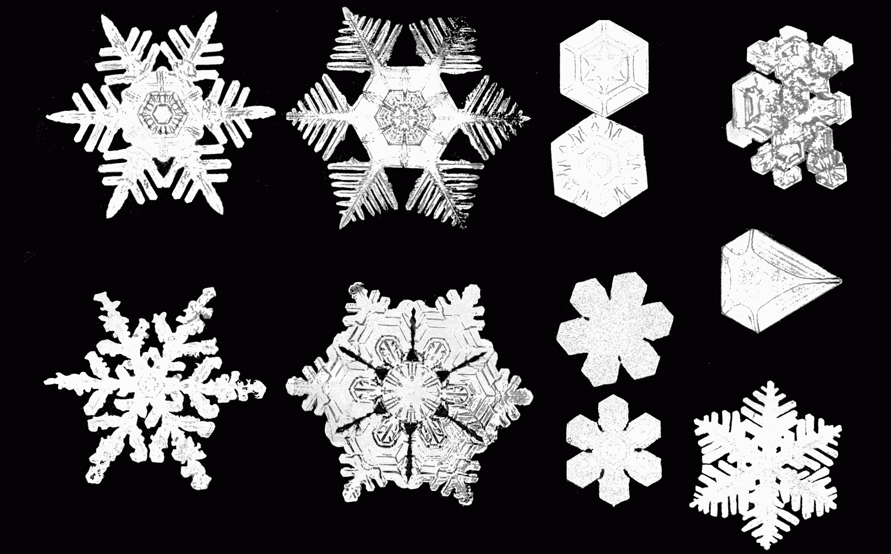Internet et le réseau TGV
Différences :
- Réseau TGV : planifié, très centralisé
- Internet : pas du tout planifié, croissance organique
...et pourtant les deux sont vitaux
Quelle est la stabilité du réseau TGV ?
Qu'est-ce qui se passe si j'enlève une station ?
Si j'enlève Nice ? Lyon ? Paris ?
Les connections entre serveurs
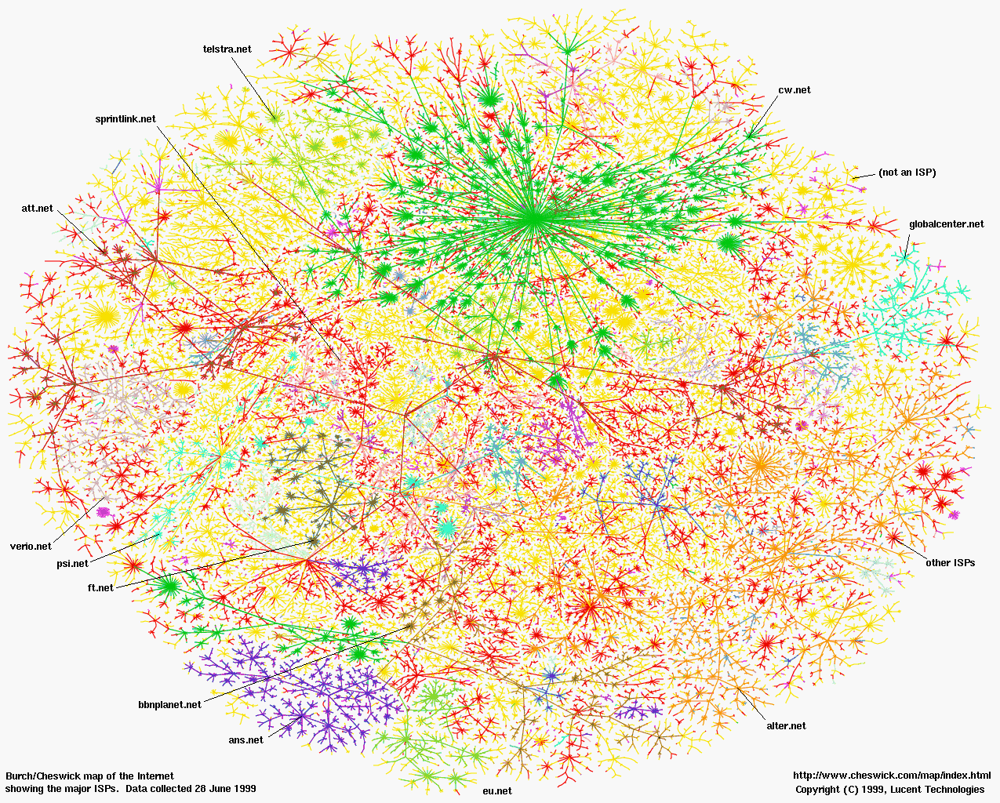Comment l'expliquer ?
En somme : plus votre serveur est important, plus de gens vont s'y connecter, mais ils se connecteront aussi à d'autres serveurs...
mais aussi vos réseaux sociaux
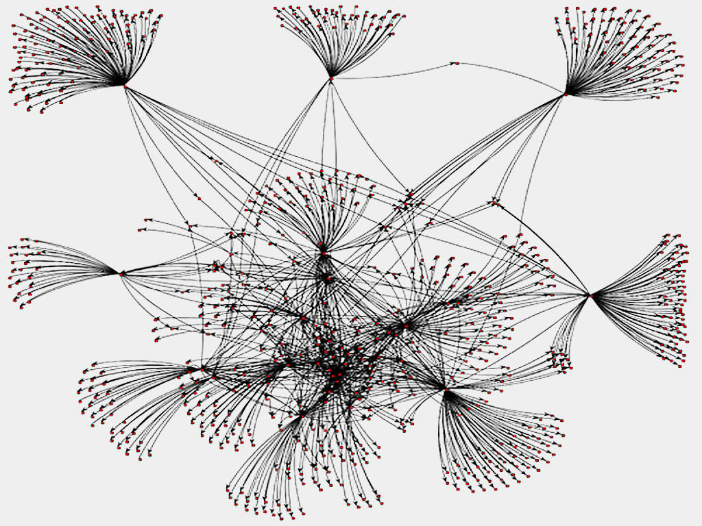Par exemple la règle des 4-7 intermédiaires.
Il n'y a pourtant aucune planification, mais il y a des comportements étonnants. Comment mieux les comprendre ?
Intérêt (exemple) : campagnes de vaccination, épidémies...
Messages final
- Des règles (très) simples à petite échelle donnent un comportement à grande échelle imprévisible
- Il est important de comprendre ce type de phénomènes (pour la physique, mais aussi pour la société). Par exemple, l'intelligence qui émerge d'un ensemble de neurones ?
- La physique a bien plus d'applications qu'on ne le croit !